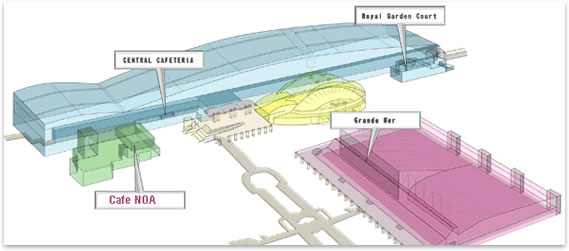
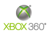
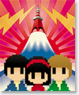
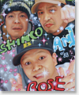
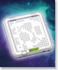
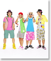

10월 10일 금요일 | 개장 17:15(예정)
- 입장 방법
- RSVP by Oct.7
- Access
- 입구에서 TGS Visitor Pass를 보여 주세요
- 장소
- Cafe NOA | Makuhari Messe 국제회의장 1층


For inquiries, please contact the management office at .
10월 10일 금요일 | 18:00-20:00
- 장소
- Cafe NOA | Makuhari Messe 국제회의장 1층
- For details
- 자세한 것은 웹 사이트를 봐 주세요 : http://tgs.cesa.or.jp/sown/en/

Saturday, October 11, 2008 | DOORS OPEN at 18:00 / START 18:30
Hall 8, Makuhari Messe
- What is GMT?
- GMT is a special live show which will be held after the TGS on the Saturday, and features 6 artists who all like video games!
- Artists
-
    Shoko Nakagawa YMCK GhM Sound Team from Grasshopper Manufacture SCHADARAPARR TENORI-ON ASIA ENGINEER Aural Vampire - Ticket
- 3,500yen
- Please purchase GMT tickets at the INTERNATIONAL VISITOR counter at Hall 5 on the 2nd floor.(October 9, 10 and 11)
- For details and ADVANCED RESERVATION